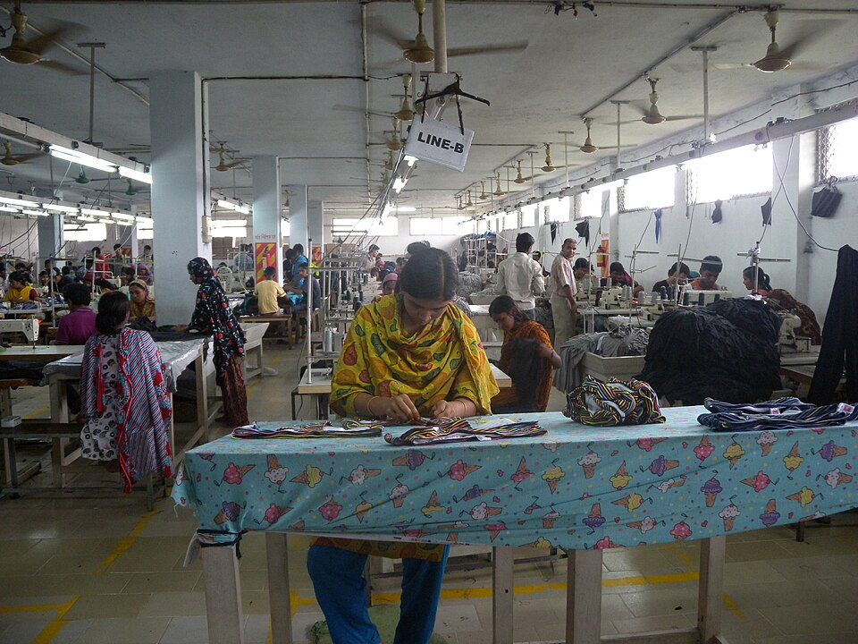

অর্থনীতি ও সমাজ · উন্নয়ন-ঋণ · সামাজিক গণতন্ত্র
উন্নয়নের নামে ঋণ: নীতিগত স্বাধীনতা ও বাংলাদেশের এআই প্রস্তাব
এডিবি ও বিশ্বব্যাংকের ঋণ দরিদ্র বা দুর্বল অর্থনীতিকে অবকাঠামো ও জনসেবা গড়তে সাহায্য করতে পারে। কিন্তু বৈদেশিক মুদ্রার ঝুঁকি, নীতিগত শর্ত, দুর্বল বাস্তবায়ন এবং সামাজিক ব্যয় যথাযথভাবে সামলানো না হলে একই ঋণ ভবিষ্যৎ উন্নয়নের সামর্থ্য কমিয়ে দিতে পারে।

এই প্রবন্ধের বক্তব্য হলো, উন্নয়ন-ঋণকে শুধু “টাকা এসেছে” বা “প্রকল্প হয়েছে” দিয়ে বিচার করা যায় না। দেখতে হবে: কে শর্ত নির্ধারণ করেছে, ঋণ কোন মুদ্রায় ও কী খরচে পরিশোধ হবে, প্রকল্পের সুবিধা কাদের কাছে পৌঁছাবে, এবং ব্যর্থতা বা অর্থনৈতিক ধাক্কার বোঝা কে বহন করবে। সমালোচনাটি ঋণ বা প্রযুক্তির বিরুদ্ধে নয়; এটি উন্নয়নের সিদ্ধান্তে গণতান্ত্রিক নিয়ন্ত্রণ, আর্থিক স্থায়িত্ব ও ন্যায্য বণ্টনের পক্ষে।
১. উন্নয়ন-ঋণ এক ধরনের নয়
প্রকল্প-ঋণ সাধারণত নির্দিষ্ট অবকাঠামো বা সেবায় বিনিয়োগ করে। এর সঙ্গে দরপত্র, ক্রয়, পরিবেশগত ও সামাজিক সুরক্ষা, নিরীক্ষা, প্রতিবেদন এবং বাস্তবায়নের দায়বদ্ধতা থাকতে পারে। নীতি-ভিত্তিক ঋণ আবার সরকারি বাজেট সহায়তা বা নির্দিষ্ট খাতের সংস্কারের সঙ্গে যুক্ত; এডিবির নীতি অনুযায়ী, সম্মত নীতিগত পদক্ষেপ শেষ হলে অর্থ ছাড়া হতে পারে। বিশ্বব্যাংকের Development Policy Financing-এও অর্থছাড়ের আগে নির্দিষ্ট “prior actions” ও সামষ্টিক অর্থনৈতিক কাঠামোর মূল্যায়ন থাকে। কারিগরি সহায়তা, প্রকল্প-ঋণ ও নীতি-ভিত্তিক ঋণকে এক করে দেখলে প্রকৃত শর্ত ও ঝুঁকি অস্পষ্ট হয়। [১–৩]
এডিবি ও বিশ্বব্যাংকের ঋণের সুদ, মেয়াদ, গ্রেস পিরিয়ড ও ফি-ও ঋণ-সুবিধা অনুযায়ী বদলে যায়। কিছু অর্থায়ন অত্যন্ত স্বল্প-খরচের বা দীর্ঘমেয়াদি হতে পারে; অন্য ঋণের হার বাজারের সঙ্গে ওঠানামা করতে পারে। তাই “সব ঋণ শোষণমূলক” বলা যেমন ভুল, তেমনি “উন্নয়ন-ব্যাংকের ঋণ সস্তা বলে ঝুঁকিহীন”—এটিও ভুল। নির্দিষ্ট চুক্তি, মুদ্রা, ফি, শর্ত ও ঝুঁকি-পরীক্ষাই বিচার্য। [৪]
২. বৈদেশিক মুদ্রার ঋণ: আয় দেশীয়, দায় বিদেশি মুদ্রায়
বিদেশি মুদ্রায় নেওয়া ঋণ পরিশোধ করতে বৈদেশিক মুদ্রা দরকার। অথচ সড়ক, হাসপাতাল, কৃষি সম্প্রসারণ বা ডিজিটাল সরকারি সেবার সুফল অনেক সময় মানুষের জীবনমান ও উৎপাদনশীলতায় আসে—সরাসরি ডলার আয় হিসেবে নয়। মুদ্রার অবমূল্যায়ন, রপ্তানি কমে যাওয়া বা আমদানি ব্যয় বেড়ে গেলে একই ঋণ শোধ করতে দেশীয় বাজেট থেকে বেশি অর্থ দিতে হয়। এ ঝুঁকি প্রকল্পকে অকার্যকর প্রমাণ করে না; বরং প্রকল্পের সামাজিক লাভের পাশাপাশি মুদ্রা ও পরিশোধ-ঝুঁকির স্বাধীন বিশ্লেষণ জরুরি করে।
দুর্বল কর-রাজস্ব ও সীমিত বৈদেশিক মুদ্রার রিজার্ভযুক্ত দেশে ঋণ-পরিশোধের ব্যয় বাড়লে সরকারকে নতুন কর, ব্যয়-সংকোচন বা আরও ঋণের মধ্যে বেছে নিতে হতে পারে। এই পছন্দ নিরপেক্ষ নয়। সামাজিক সুরক্ষা, প্রাথমিক স্বাস্থ্যসেবা, শিক্ষা, কৃষি ভর্তুকি বা স্থানীয় অবকাঠামো কমে গেলে দরিদ্র পরিবার ও শ্রমজীবী মানুষ বেশি ক্ষতিগ্রস্ত হতে পারেন। ফলে ঋণের ঝুঁকি শুধু অর্থ মন্ত্রণালয়ের হিসাব নয়; এটি বণ্টন ও ক্ষমতার প্রশ্নও।
৩. শর্ত, নীতিগত স্বাধীনতা ও গণতান্ত্রিক বৈধতা
ঋণদাতা সংস্থা নীতিগত শর্তকে প্রায়ই অর্থের যথাযথ ব্যবহার, সামষ্টিক স্থিতিশীলতা বা সংস্কার বাস্তবায়নের উপায় হিসেবে ব্যাখ্যা করে। এসব লক্ষ্য বৈধ হতে পারে। কিন্তু কোনো সংস্কার যদি দেশের সংসদ, শ্রমিক, কৃষক, ক্ষুদ্র ব্যবসা, জনসেবা ব্যবহারকারী ও নাগরিক সমাজের পর্যাপ্ত আলোচনার বাইরে নির্ধারিত হয়, তবে নির্বাচিত সরকারের নীতি-পরিসর সংকুচিত হতে পারে। তখন “দেশীয় মালিকানা” কাগজে থাকলেও বাস্তবে জরুরি অর্থের ওপর নির্ভরতা আলোচনার ক্ষমতা একদিকে ঠেলে দেয়।
শর্তের সংখ্যা বা নাম একাই বলে না সেগুলো ন্যায়সংগত কি না। আসল প্রশ্ন হলো: শর্ত কি ঋণের উদ্দেশ্যের সঙ্গে সরাসরি সম্পর্কিত? তা বাস্তবায়নের প্রশাসনিক সক্ষমতা আছে? প্রভাবিত মানুষের সঙ্গে পরামর্শ হয়েছে? শর্ত পূরণে ব্যর্থ হলে জনসেবার অর্থ আটকে যাবে কি? বিকল্প নীতি আলোচনার সুযোগ আছে? এডিবির নিজস্ব স্বাধীন মূল্যায়নে জটিল নকশা, বহু ধাপের শর্ত, দুর্বল বাস্তবায়ন-ক্ষমতা এবং প্রত্যক্ষ-পরোক্ষ খরচ যথাযথভাবে না ধরার ঝুঁকি চিহ্নিত হয়েছে। [৫]
নীতি-শর্ত নিয়ে সবচেয়ে সমালোচনামূলক গবেষণার বড় অংশ IMF-কে কেন্দ্র করে। ১৯৮৫–২০১৪ সময়ে ১৩১ দেশের IMF চুক্তির ৫৫,৪৬৫টি শর্ত বিশ্লেষণ করা একটি গবেষণা নীতিগত স্বাধীনতা ও সামাজিক সুরক্ষা নিয়ে প্রশ্ন তোলে। ৮১টি উন্নয়নশীল দেশের ওপর আরেকটি গবেষণা নির্দিষ্ট ধরনের IMF কাঠামোগত শর্ত ও দারিদ্র্যের সম্পর্ক পরীক্ষা করে। এসব ফলকে এডিবি বা বিশ্বব্যাংকের প্রতিটি ঋণের ফল বলে চালানো যাবে না। কিন্তু তারা একটি গুরুত্বপূর্ণ পরীক্ষাযোগ্য ঝুঁকি দেখায়: আর্থিক সংকটে নেওয়া সংস্কারের সামাজিক মূল্য কে বহন করে, তা আগে থেকে মাপা দরকার। [৬, ৭]
৪. প্রকল্প সফল হলেও—কার জন্য?
ঋণ-অর্থায়িত প্রকল্পের অবকাঠামো নির্মাণ বা আনুষ্ঠানিক সমাপ্তি নিজে থেকেই উন্নয়নের সাফল্য নয়। সুবিধা কারা পেলেন? খরচ কারা বহন করলেন? দেশীয় দক্ষতা ও রক্ষণাবেক্ষণ-সক্ষমতা তৈরি হলো, নাকি প্রযুক্তি, যন্ত্রাংশ ও রক্ষণাবেক্ষণের জন্য দীর্ঘদিন বিদেশি সরবরাহকারীর ওপর নির্ভর করতে হবে? অতিরিক্ত ঋণ ও ব্যয়ের কারণে অন্য জনসেবার বরাদ্দ কমবে কি? সুবিধা যদি সীমিত গোষ্ঠী পায় আর খরচ জনগণের ওপর ছড়িয়ে পড়ে, তাহলে প্রকল্প অর্থনৈতিক প্রবৃদ্ধির চিত্র দেখাতে পারে, কিন্তু অর্থনীতির সহনশীলতা বাড়ায় না।
প্রকল্প-ঋণে বড় চুক্তি, বিশেষজ্ঞ পরামর্শ, ক্রয়, জমি অধিগ্রহণ ও অনুমোদনের সিদ্ধান্ত থাকতে পারে। দুর্বল রাষ্ট্রীয় প্রতিষ্ঠানে এগুলো চুক্তি-নিয়ন্ত্রণ, ব্যয় বৃদ্ধি, পক্ষপাতদুষ্ট নির্বাচন বা রাজনৈতিক পৃষ্ঠপোষকতার ঝুঁকি তৈরি করতে পারে। এর অর্থ এই নয় যে প্রতিটি প্রকল্পে দুর্নীতি প্রমাণিত। বরং উন্মুক্ত দরপত্র, চুক্তি প্রকাশ, স্বাধীন নিরীক্ষা এবং জনগণের অভিযোগ জানানোর ব্যবস্থা কেন দরকার—তা বোঝায়।
৫. বাংলাদেশের বাস্তবতা: ঋণ আছে, আবার তীব্র জনঅগ্রাধিকারও আছে
IMF-এর ২০২৬ সালের ঋণ-পর্যালোচনায় বাংলাদেশের সরকারি ও সরকারি-গ্যারান্টিযুক্ত ঋণ FY25-এ জিডিপির প্রায় ৪১ শতাংশে পৌঁছেছে। ঋণ-সংকটের ঝুঁকি “মাঝারি” হিসেবে মূল্যায়ন করা হয়েছে; তবে ধাক্কা সামলানোর অবকাশ সীমিত বলে উল্লেখ করা হয়েছে। “মাঝারি ঝুঁকি” মানে দেশ দেউলিয়া বা ঋণ পরিশোধে অক্ষম—এমন ঘোষণা নয়। এর অর্থ, নতুন ঋণের ব্যয়, বৈদেশিক মুদ্রা, আয় ও সম্ভাব্য ধাক্কা নিয়ে সতর্ক হিসাব জরুরি। [৮]
বিশ্বব্যাংকের ২০২৬ সালের মূল্যায়ন অনুযায়ী, বাংলাদেশের জাতীয় দারিদ্র্যের হার ২০২২ সালের ১৮.৭ শতাংশ থেকে ২০২৫ সালে ২১.৪ শতাংশ হয়েছে—এটি বিশ্বব্যাংকের হিসাবভিত্তিক অনুমান। স্বাস্থ্যব্যয়ের বড় অংশ মানুষকে নিজ পকেট থেকে দিতে হয়; নিরাপদ পানি, বিদ্যুৎ-গ্যাস, কৃষি উপকরণ, বাসাভাড়া ও শিক্ষার মানও বহু পরিবারের দৈনন্দিন বাস্তবতা। এই প্রেক্ষাপটে নতুন প্রযুক্তি বিনিয়োগের প্রশ্ন হলো: একই ঋণ কৃষি উৎপাদন, প্রাথমিক চিকিৎসা, বিদ্যালয়ের শেখার ফল, নিরাপদ পানি বা নির্ভরযোগ্য শক্তিতে দিলে জনকল্যাণ ও উৎপাদনশীলতার তুলনামূলক ফল কী হতো? [৯]
৬. বাংলাদেশের “বাংলা এআই” প্রস্তাব: জানা তথ্য ও অজানা শর্ত
১১ নভেম্বর ২০২৬-এর সংবাদ অনুযায়ী, এডিবির সঙ্গে আলোচনায় থাকা ২৫০ মিলিয়ন ডলারের অঙ্কটি একটি প্রাথমিক, প্রস্তাবিত কর্মসূচির অংশ। এতে বাংলা এআইয়ের পাশাপাশি সাইবার নিরাপত্তা ও প্রযুক্তি গ্রাম রয়েছে। সংবাদে বলা হয়েছে, অর্থায়নের কাঠামো ও বাস্তবায়নের সময়সূচি তখনো চূড়ান্ত হয়নি; তাই একে অনুমোদিত ঋণ, চূড়ান্ত শর্তযুক্ত ঋণ, বা শুধু “বাংলা এআই” তৈরির জন্য বরাদ্দ অর্থ বলা যাবে না। এডিবির আলাদা ডিজিটাল অর্থনীতি-সংক্রান্ত প্রকল্পতথ্যও ভবিষ্যৎ বিনিয়োগের প্রস্তুতি ও কারিগরি সহায়তার কথা বলে। [১০, ১১]
বর্তমান বহুভাষিক কিছু মডেল বাংলা সমর্থন করে; বাংলাভিত্তিক গবেষণা ও মডেলও তৈরি হয়েছে। কিন্তু “বাংলা সমর্থন” মানেই বাংলাদেশের আইন, স্থানীয় উপভাষা, সরকারি নথি বা স্বাস্থ্য ও শিক্ষার মতো উচ্চঝুঁকির কাজে নির্ভুলতা নয়। তাই নতুন জাতীয় মডেলের পক্ষে যুক্তি দিতে হলে সরকারকে প্রকাশ করতে হবে: বিদ্যমান মডেল ব্যবহার বা উন্নত করার চেয়ে এটি কেন ভালো; কোন নির্দিষ্ট জনসমস্যা সমাধান করবে; কারা সুবিধা পাবে; তথ্যের অধিকার ও গোপনীয়তা কীভাবে রক্ষা হবে; এবং ভুল হলে দায় কার। [১২]
“প্রযুক্তিগত সার্বভৌমত্ব” ও “বিশ্বের সঙ্গে তাল মেলানো” বৈধ নীতি-লক্ষ্য হতে পারে। কিন্তু সেগুলো নিজে থেকেই প্রকল্পের জনস্বার্থ প্রমাণ করে না। বৃহৎ প্রযুক্তি প্রকল্পের আকর্ষণীয় ন্যারেটিভ যেন ঋণের মোট খরচ, বিকল্প, সুবিধাভোগী, দরপত্র, রক্ষণাবেক্ষণ ও জবাবদিহি নিয়ে প্রশ্ন ঢেকে না ফেলে। অতীতের ICT প্রকল্প নিয়ে সরকারি শ্বেতপত্র, তদন্ত ও সংবাদপ্রতিবেদনে অনিয়ম, অতিরিক্ত ব্যয় ও দুর্বল বাস্তবায়নের অভিযোগ বা পর্যবেক্ষণ উঠে এসেছে। এগুলো বর্তমান প্রস্তাবে দুর্নীতি প্রমাণ করে না; বরং স্বচ্ছতা ও স্বাধীন নিরীক্ষার প্রয়োজনীয়তা বাড়ায়। [১৩]
৭. সামাজিক গণতান্ত্রিক মানদণ্ড
সামাজিক গণতান্ত্রিক দৃষ্টিতে উন্নয়ন শুধু GDP, নতুন অবকাঠামো বা প্রযুক্তিগত মর্যাদা নয়। দেখতে হবে উৎপাদনের সুফল কারা পাচ্ছেন, শ্রমিকের দরকষাকষির ক্ষমতা বাড়ছে কি না, কৃষক ন্যায্য উপকরণ ও বাজার পাচ্ছেন কি না, এবং চিকিৎসা ও শিক্ষা সবার নাগালে আসছে কি না। এই মূল্যায়নে রাষ্ট্রের কৌশলগত ভূমিকা, শক্তিশালী গণপরিষেবা, প্রগতিশীল রাজস্বনীতি, শ্রম অধিকার, সমবায় উদ্যোগ এবং গণতান্ত্রিক জবাবদিহি কেন্দ্রীয়। উন্নয়নশীল দেশের শিল্পনীতি নিয়ে Ha-Joon Chang ও Robert Wade-এর কাজ দেখায়—দেশের ঐতিহাসিক বাস্তবতা ও রাষ্ট্রের নীতিগত সক্ষমতা বিবেচনা না করে একক বাজার-সূত্র চাপালে উন্নয়নের পথ সংকুচিত হতে পারে। [১৪, ১৫]
অতএব, প্রশ্ন “ঋণ নেব কি নেব না” বা “এআই চাই কি চাই না”—এত সরল নয়। প্রশ্ন হলো: ঋণ কি জনস্বার্থের, শর্ত কি গণতান্ত্রিকভাবে যাচাই করা, ঝুঁকি কি ন্যায্যভাবে বণ্টিত, এবং দেশ কি প্রকল্প শেষে আরও স্বনির্ভর হচ্ছে? দরিদ্র মানুষের মৌলিক চাহিদা অমীমাংসিত রেখে ঋণনির্ভর প্রযুক্তিকে উন্নয়নের অপরিহার্য শর্ত বলা হলে তা উন্নয়নের একপেশে ধারণা।
ঋণ অনুমোদনের আগে জনস্বার্থে যা প্রকাশ করা উচিত
- ঋণের মুদ্রা, সুদ বা রেফারেন্স হার, মেয়াদ, গ্রেস পিরিয়ড, সব ফি ও পরিশোধ-সময়সূচি।
- প্রকল্প-ঋণ, নীতি-ভিত্তিক ঋণ, অনুদান ও কারিগরি সহায়তার আলাদা হিসাব।
- অর্থছাড়ের সঙ্গে যুক্ত নীতিগত পদক্ষেপ, সেগুলোর আইনি ভিত্তি ও মানুষের ওপর সম্ভাব্য প্রভাব।
- সম্ভাব্যতা সমীক্ষা, বিদ্যমান প্রযুক্তি ও বিকল্প বিনিয়োগের তুলনা, মোট জীবনচক্র ব্যয় এবং রক্ষণাবেক্ষণ পরিকল্পনা।
- দরপত্র, চুক্তি, উপঠিকাদার, সুবিধাভোগী প্রতিষ্ঠান ও স্বাধীন নিরীক্ষার ফল প্রকাশ।
- মুদ্রার অবমূল্যায়ন, রপ্তানি আয় হ্রাস, ব্যয় বৃদ্ধি বা দুর্যোগের পরিস্থিতিতে ঋণ-পরিশোধের চাপ কেমন হবে—তার প্রকাশ্য বিশ্লেষণ।
- শ্রমিক, কৃষক, শিক্ষক, স্বাস্থ্যকর্মী, প্রযুক্তি বিশেষজ্ঞ, নাগরিক সমাজ ও প্রভাবিত জনগোষ্ঠীর অংশগ্রহণে উন্মুক্ত পরামর্শ।
উপসংহার
এডিবি ও বিশ্বব্যাংকের ঋণ দরকারি অবকাঠামো, জনসেবা ও দক্ষতা গড়তে সহায়তা করতে পারে। কিন্তু দুর্বল দরকষাকষি, বৈদেশিক মুদ্রার অমিল, অপরিকল্পিত শর্ত, দুর্বল প্রতিষ্ঠান এবং সামাজিক ব্যয় উপেক্ষা করলে ঋণ অর্থনীতির ভবিষ্যৎ সক্ষমতা কমাতে পারে। এজন্য প্রতিটি ঋণকে আলাদা করে যাচাই করা দরকার—সমালোচনাটি হবে নীতি, চুক্তি, প্রমাণ ও ফলের; প্রমাণ ছাড়া কোনো ব্যক্তি বা প্রতিষ্ঠানের বিরুদ্ধে অপরাধের ঘোষণা নয়।
উন্নয়নের সাফল্য প্রকল্পের নাম বা প্রযুক্তির আকার দিয়ে নয়—মানুষের জীবন কতটা সাশ্রয়ী, নিরাপদ, গণতান্ত্রিক ও মর্যাদাপূর্ণ হলো, তা দিয়ে মাপা হোক।
তথ্যসূত্র
- Asian Development Bank. Public Sector Financing: Official Co-financing and Policy-Based Lending.
- Asian Development Bank Independent Evaluation Department. (2018). Policy-Based Lending 2008–2017: Performance, Results, and Issues of Design.
- World Bank. Development Policy Financing; Independent Evaluation Group, Development Policy Financing evaluations.
- Asian Development Bank. Public Sector Financing: Lending Policies and Rates.
- Asian Development Bank Independent Evaluation Department. (2007). Evaluation on Policy-Based Lending: Emerging Practices in Supporting Reforms in Developing Member Countries.
- Stubbs, T., Kentikelenis, A., Ray, R., & Gallagher, K. P. (2016). IMF conditionality and development policy space, 1985–2014. Review of International Political Economy, 23(4), 543–582.
- Biglaiser, G., & McGauvran, R. J. (2022). The effects of IMF loan conditions on poverty in the developing world. Journal of International Relations and Development, 25, 806–833. IMF-specific empirical study; its results should not be assumed to apply unchanged to ADB or World Bank project loans.
- International Monetary Fund. (2026). Bangladesh: 2025 Article IV Consultation—Debt Sustainability Analysis.
- World Bank. (2026, April 8). Urgent Reforms Needed to Restore Macro Stability, Sustain Growth, and Create Jobs in Bangladesh.
- The Daily Star. (2026, November 11). Dhaka seeks ‘$250m’ ADB loan for Bangla AI, cybersecurity. Reports an indicative proposal; financing structure and schedule were still under discussion.
- Asian Development Bank. Advancing a Future Ready Digital Economy for Bangladesh (60290-001). Proposed technical assistance for diagnostics and preparation; it is distinct from approval of a subsequent investment loan.
- OpenAI Help Center. ChatGPT language support; Nahin, A. et al. (2025). TituLLMs: A Family of Bangla LLMs with Comprehensive Benchmarking, Findings of ACL 2025.
- Bangladesh Sangbad Sangstha. (2025). ICT Division’s white paper published; see also Prothom Alo’s report on the investigation of ICT projects. Reports of findings and referrals are not equivalent to final judicial findings in every case.
- Chang, H.-J. (2002). Kicking Away the Ladder: Development Strategy in Historical Perspective. Anthem Press.
- Wade, R. (1990). Governing the Market: Economic Theory and the Role of Government in East Asian Industrialization. Princeton University Press.
- Stiglitz, J. E. (2002). Globalization and Its Discontents. W. W. Norton; Woods, N. (2006). The Globalizers: The IMF, the World Bank, and Their Borrowers. Cornell University Press.